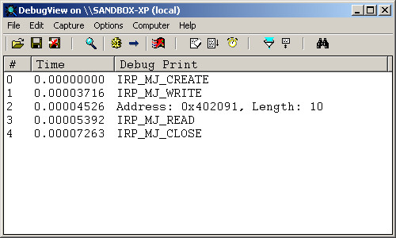

參考資訊：
https://wasm.in/
http://four-f.narod.ru/
https://github.com/steward-fu/ddk
http://www.delphibasics.info/home/delphibasicsprojects/delphidriverdevelopmentkit
main.pas
unit main;
interface
uses
DDDK;
const
DEV_NAME = '\Device\MyDriver';
SYM_NAME = '\DosDevices\MyDriver';
function _DriverEntry(pMyDriver : PDriverObject; pMyRegistry : PUnicodeString) : NTSTATUS; stdcall;
implementation
var
szBuf : array[0..255] of char;
function IrpOpen(pMyDevice : PDeviceObject; pIrp : PIrp) : NTSTATUS; stdcall;
begin
DbgPrint('IRP_MJ_CREATE', []);
Result := STATUS_SUCCESS;
pIrp^.IoStatus.Information := 0;
pIrp^.IoStatus.Status := Result;
IoCompleteRequest(pIrp, IO_NO_INCREMENT);
end;
function IrpRead(pMyDevice : PDeviceObject; pIrp : PIrp) : NTSTATUS; stdcall;
var
len : ULONG;
begin
DbgPrint('IRP_MJ_READ', []);
len := strlen(@szBuf[0]);
memcpy(pIrp^.UserBuffer, @szBuf[0], len);
Result := STATUS_SUCCESS;
pIrp^.IoStatus.Information := len;
pIrp^.IoStatus.Status := Result;
IoCompleteRequest(pIrp, IO_NO_INCREMENT);
end;
function IrpWrite(pMyDevice : PDeviceObject; pIrp : PIrp) : NTSTATUS; stdcall;
var
len : ULONG;
psk : PIoStackLocation;
begin
DbgPrint('IRP_MJ_WRITE', []);
psk := IoGetCurrentIrpStackLocation(pIrp);
len := psk.Parameters.Write.Length;
memcpy(@szBuf[0], pIrp^.UserBuffer, len);
DbgPrint('Address: 0x%x, Length: %d', [pIrp^.UserBuffer, len]);
Result := STATUS_SUCCESS;
pIrp^.IoStatus.Information := len;
pIrp^.IoStatus.Status := Result;
IoCompleteRequest(pIrp, IO_NO_INCREMENT);
end;
function IrpClose(pMyDevice : PDeviceObject; pIrp : PIrp) : NTSTATUS; stdcall;
begin
DbgPrint('IRP_MJ_CLOSE', []);
Result := STATUS_SUCCESS;
pIrp^.IoStatus.Information := 0;
pIrp^.IoStatus.Status := Result;
IoCompleteRequest(pIrp, IO_NO_INCREMENT);
end;
procedure Unload(pMyDriver : PDriverObject); stdcall;
var
szSymName : TUnicodeString;
begin
RtlInitUnicodeString(@szSymName, SYM_NAME);
IoDeleteSymbolicLink(@szSymName);
IoDeleteDevice(pMyDriver^.DeviceObject);
end;
function _DriverEntry(pMyDriver : PDriverObject; pMyRegistry : PUnicodeString) : NTSTATUS; stdcall;
var
szDevName : TUnicodeString;
szSymName : TUnicodeString;
pMyDevice : PDeviceObject;
begin
RtlInitUnicodeString(@szDevName, DEV_NAME);
RtlInitUnicodeString(@szSymName, SYM_NAME);
Result := IoCreateDevice(pMyDriver, 0, @szDevName, FILE_DEVICE_UNKNOWN, 0, FALSE, pMyDevice);
pMyDriver^.MajorFunction[IRP_MJ_CREATE] := @IrpOpen;
pMyDriver^.MajorFunction[IRP_MJ_READ] := @IrpRead;
pMyDriver^.MajorFunction[IRP_MJ_WRITE] := @IrpWrite;
pMyDriver^.MajorFunction[IRP_MJ_CLOSE] := @IrpClose;
pMyDriver^.DriverUnload := @Unload;
pMyDevice^.Flags := pMyDevice^.Flags and not DO_DEVICE_INITIALIZING;
Result := IoCreateSymbolicLink(@szSymName, @szDevName);
end;
end.
完成
